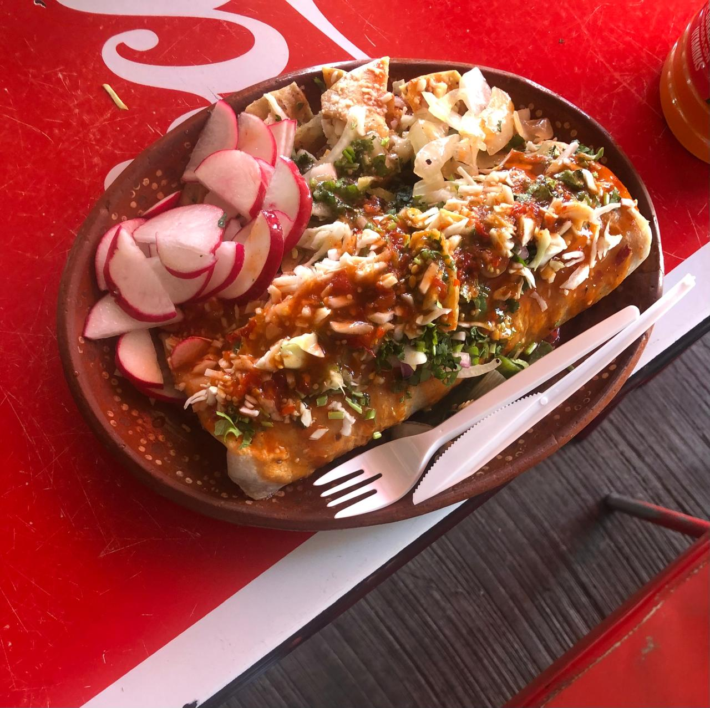
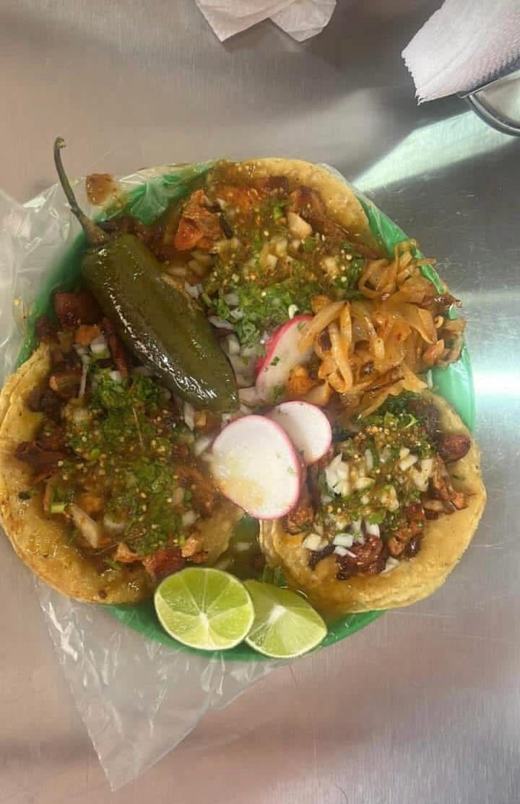

con los mejores burritos quesadillas tacos lonches y nachos para pedidos a domicilio #3327812368 y 3317982503. Están ubicados por el libramiento, junto a la gasolinera. Son muy visitados por los locales por su sabor auténtico y rápido servicio.
Ubicación: Libramiento, Cuquío, Jalisco
Taquitos de: barbacoa Al pastor Chorizo Lengua Cabeza ubicados en el mercado municipal de lunes a domingo, (descansan los jueves) y los días viernes, sábados y domingo, en el mercado de la plaza principal
Ubicación: Mercado, Cuquío, Jalisco
Una cenaduría tradicional en Cuquío que ofrece flautas, tostadas, sopes y enchiladas. Ideal para disfrutar en familia por su ambiente tranquilo y comida casera .
Ubicación: Mercado, Cuquío, Jalisco